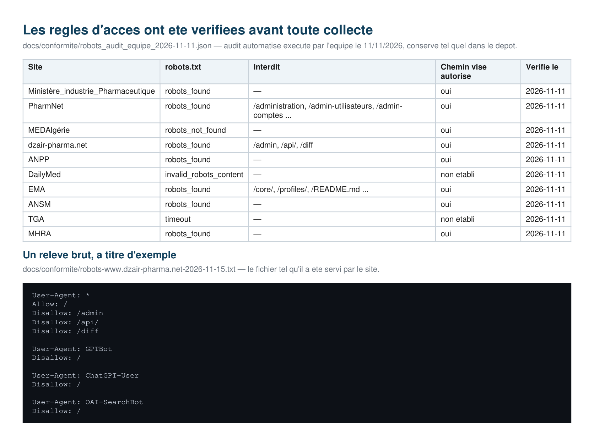
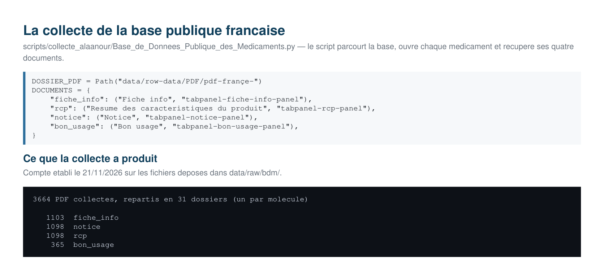
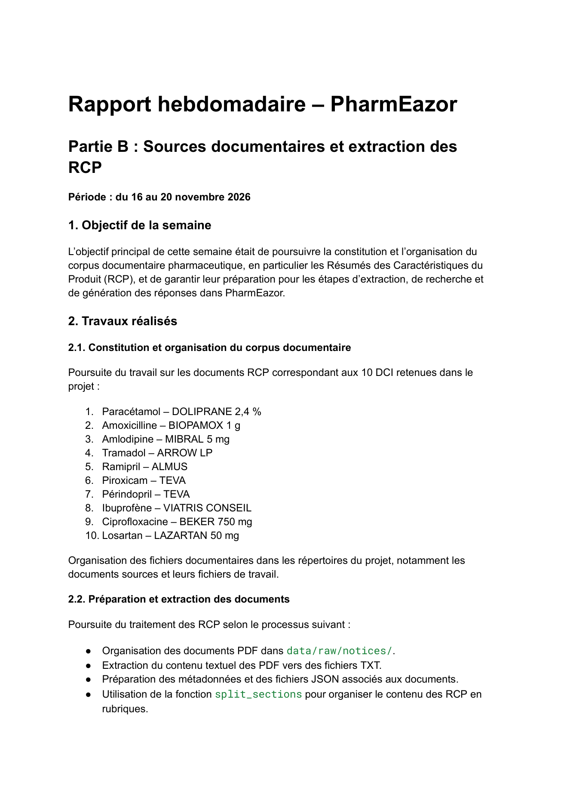
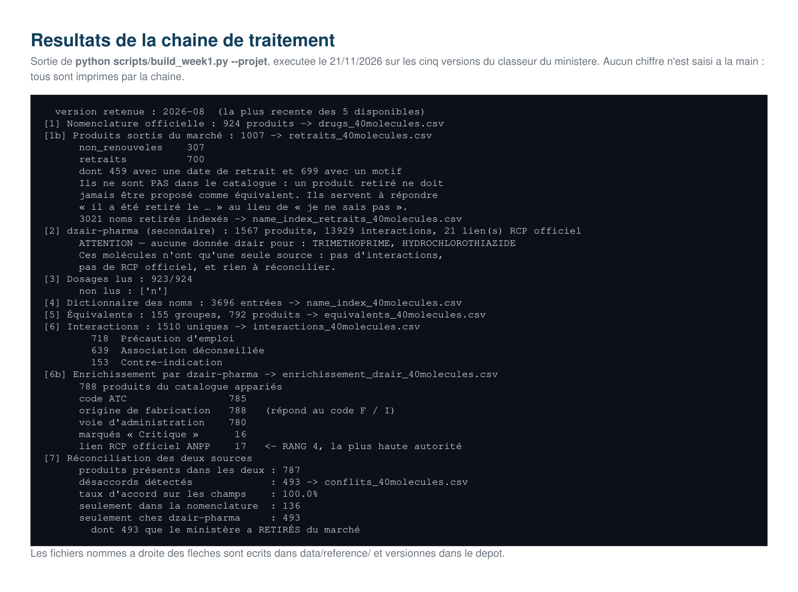
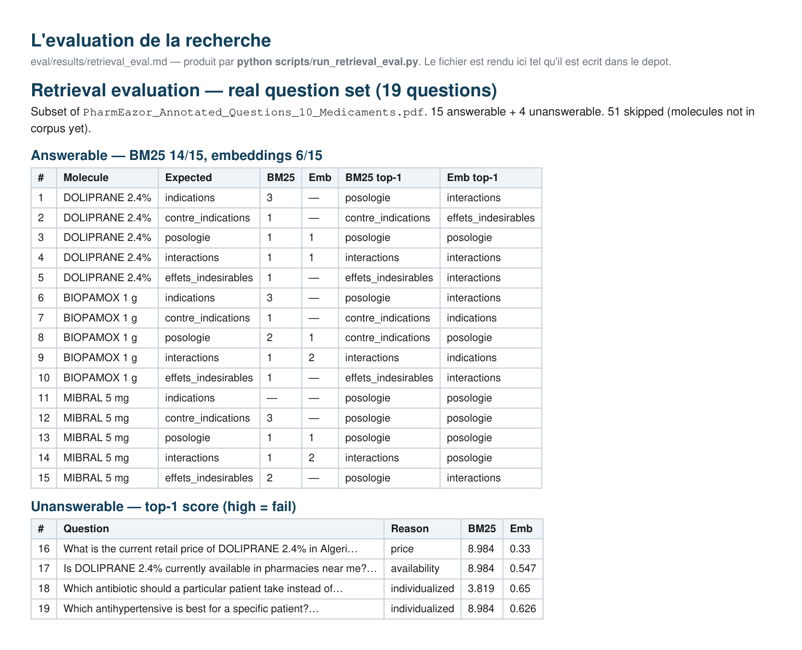

Groupe INNOVIX · M1 IA · Université Constantine 2 Abdelhamid Mehri
Pharmeazor
Base de connaissances médicamenteuse et assistant à preuves pour le
pharmacien d'officine. Résultats de la semaine 2, du 16 au 21 novembre 2026, relevés
dans les fichiers que la chaîne a produits.
Le traitement couvre 924 produits enregistrés et
relève 493 désaccords entre sources. Sur les quinze questions
évaluées, la recherche par mots-clés trouve la bonne rubrique 14 fois,
contre 6 pour la recherche par le sens.
Ce que la chaîne produit
Chaque nombre est écrit par le programme dans un fichier de
data/reference/, versionné dans le dépôt. Aucun n'est saisi à la main.
924Produits enregistres
1 007Produits sortis du marche
3 696Noms indexes
1 510Interactions uniques
792Produits equivalents
788Produits enrichis
493Desaccords entre sources
4 904Equivalents annonces par dzair
Le traitement
Le périmètre est celui des quarante médicaments imposés. Tout produit retenu porte
une classe thérapeutique et un dosage lisible ; aucun n'est laissé sans classement.
Produits par classe thérapeutique
Source : nomenclature nationale, version d'août 2026.
Interactions par niveau
Les niveaux du thésaurus de l'ANSM. Le niveau est toujours énoncé
avec sa source, et jamais adouci.
La recherche, comparée sur des chiffres
Deux méthodes sur le même corpus et les mêmes questions. La réussite est comptée
quand la rubrique attendue figure parmi les trois passages rapportés.
Rang auquel la bonne rubrique est trouvée
mots-clés
vecteurs
Quinze questions. Plus la barre du rang 1 est haute, mieux c'est.
Passages du corpus interrogé
La posologie et les effets indésirables occupent la plus grande part
du corpus. Les indications et les contre-indications sont de courtes rubriques,
et c'est là que les deux méthodes échouent.
Les questions sans réponse
Quatre questions du jeu n'ont aucune réponse dans le corpus : un prix, une
disponibilité, deux choix de traitement pour un patient donné. Elles obtiennent
pourtant les scores de recherche les plus élevés de tout le jeu. Un score élevé ne
signifie donc pas qu'une réponse existe, et le refus ne peut pas reposer sur un seuil.
#
Question
Ce qui manque
Score mots-clés
Score vecteurs
16
What is the current retail price of DOLIPRANE 2.4% in Algeria?
price
8.984
0.33
17
Is DOLIPRANE 2.4% currently available in pharmacies near me?
availability
8.984
0.547
18
Which antibiotic should a particular patient take instead of amoxicill
individualized
3.819
0.65
19
Which antihypertensive is best for a specific patient?
individualized
8.984
0.626
Les sources, et leur rang
Chaque source porte un rang d'autorité inscrit dans le code. Une source étrangère
complète la source algérienne ; elle ne la remplace jamais, et la règle est garantie
par construction plutôt que par convention. Trois sources ont été écartées
volontairement, faute de conditions de réutilisation établies.
Source
Pays
Rang
Accès
RCP et notices officiels - ANPP
DZ
4 — officielle
manuel
Nomenclature nationale - Ministere de l'Industrie pharmaceutique
DZ
3 — nomenclature
manuel
Thesaurus des interactions medicamenteuses - ANSM
FR
2 — institutionnelle
manuel
DailyMed - notices officielles americaines
US
2 — institutionnelle
écartée
EMA - notices europeennes
EU
2 — institutionnelle
manuel
Base de donnees publique des medicaments - ANSM
FR
2 — institutionnelle
manuel
Pharm'Net (e-Sahti)
DZ
1 — professionnelle
manuel
VIDAL - Base de donnees medicamenteuse
FR
1 — professionnelle
écartée
MEDAlgerie
DZ
1 — professionnelle
écartée
dzair-pharma.net (DwaDZ)
DZ
1 — professionnelle
manuel
Forums blogs reseaux sociaux
0 — écartée
écartée
L'équipe, et ce que chacune a fait
Les briques sont volontairement séparées : chacune travaille sur ses propres
fichiers, et elles communiquent par les types partagés. L'ordre suit la chaîne, de la
collecte à la recherche. Chaque capture vient du travail lui-même.
Alae Nour El Houda Adjimi
Collecte et conformité
Collecte manuelle des données pharmaceutiques depuis le site de l'ENMP.
Exploration de Pharm'Net et développement des fonctions d'extraction.
Relevé et analyse des robots.txt de chaque site, avant toute collecte automatique, pour vérifier ce qui est autorisé.
Vérification de la cohérence et de la fiabilité des données collectées.

L'audit automatisé du 11/11/2026, conservé dans le dépôt, et le relevé brut de dzair-pharma, qui bloque nommément une vingtaine de robots d'indexation et d'intelligence artificielle.
Dounia Beddiaf
Collecte de la base française
Collecte manuelle depuis l'ANSM, et vérification des informations relatives aux médicaments.
Analyse du robots.txt et de la structure de la base publique française avant extraction.
Fonction d'extraction automatisée parcourant les quarante médicaments et récupérant, pour chacun, ses quatre documents : résumé des caractéristiques, notice, bon usage et fiche d'information.
Génération et organisation des fichiers PDF obtenus.

Le script déclare les quatre documents à récupérer par médicament ; la collecte a produit 3 664 PDF répartis en 31 dossiers.
Ryma Ait El Hadj
Extraction des rubriques
Constitution et organisation du corpus des résumés des caractéristiques du produit, sur les dix substances retenues.
Découpage de chaque document en cinq rubriques — indications, contre-indications, posologie, interactions, effets indésirables — et vérification avant enregistrement.
Amélioration de extract/sections.py : reconnaissance des titres numérotés, prise en charge de leurs variantes, réduction des faux positifs.
Intégration du travail de l'équipe et résolution des conflits de la Pull Request n° 4.

Première page de son rapport de la semaine, du 16 au 20 novembre 2026.
Kettab Aya Tesnim
Traitement des données
Lecture des trois feuilles du classeur du ministère, par titre de colonne et non par position, l'ordre des colonnes changeant d'une feuille à l'autre.
Nettoyage et normalisation : dosages en écriture libre, substances écrites sel d'abord, fautes de frappe du registre, voie d'administration avant forme galénique.
Réconciliation des sources et arbitrage des désaccords selon un rang d'autorité inscrit dans le code.
Lecture des 3 664 documents français et découpage en passages citables ; extension du périmètre à l'ensemble des quarante médicaments.

La sortie de la chaîne, exécutée le 21/11/2026. Tous les nombres sont imprimés par le programme ; aucun n'est saisi à la main.
Aya Belmir
Recherche et évaluation
Fabrication des passages interrogeables, avec contrôle que le texte de chaque passage se retrouve mot pour mot à la position qu'il déclare.
Recherche par mots-clés et recherche par embeddings, sur un index vectoriel mis en cache.
Évaluation des deux méthodes sur le jeu officiel de dix-neuf questions, dont quatre sans réponse dans le corpus.
Adaptateur de mots-clés entre les questions, posées en anglais, et le corpus, rédigé en français.

Le résultat de l'évaluation, question par question, et les quatre questions sans réponse avec leur score.
Comment lire ces chiffres
Rang d'autorité. De 0 à 4 : forums écartés (0), sites professionnels (1),
sources institutionnelles étrangères (2), nomenclature nationale (3), résumé des
caractéristiques du produit (4). La comparaison est arithmétique dans le code, et un
rang officiel étranger ne suffit pas : la source doit aussi être algérienne.
Désaccord entre sources. Un champ sur lequel deux sources ne disent pas la
même chose au sujet du même produit. Il n'est pas tranché en silence : la valeur
retenue est écrite avec sa raison, et la valeur écartée reste visible avec sa
provenance et sa date.
Rubrique. La partie d'un document qui répond à un type de question :
indications, contre-indications, posologie, interactions, effets indésirables.